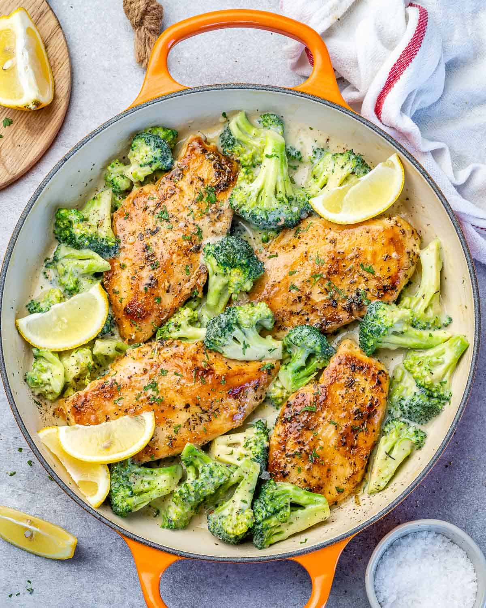

CHICKEN BREAST & CHEESY BROCCOLI

Ingredients
- 3 Sliced Chicken Breast or 1 Whole Chicken Breast
- Birds Eye Cheesy Broccoli
Preparation
- Chop your chicken into bite sized pieces then clean them.
- Once clean season with garlic powder, onion powder, parsley and lemon pepper seasoning.
- Throw that in the air fryer at 275°F for 45 mins. Checking & flipping every 15 mins.
- The chicken may need more time depending on how crispy youd like it.
- Put the birds eye cheesy broccoli in microwave for 5 mins.
- There are 2 plating options, 1) Plate on an actual plate or 2)Cut the broccoli bag on its side
& put the chicken in the bag, now carefully shake the bag & grab a fork and eat out the bag.
- Enjoy!